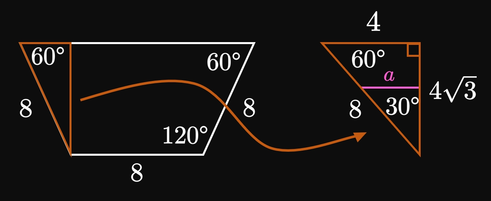

A thin disk has a surface area of \(3\) square meters.
Calculate the hydrostatic pressure and force acting on the disk
when it is \(0.5\) meter below the surface of a homogeneous body of water.
SOLUTION
Water has a density of \(\rho\) \(= 1000 \undiv{kg}{m}^3,\)
and the acceleration due to gravity is \(g\) \(= 9.8 \undiv{m}{sec}^2.\)
The hydrostatic pressure is given by
\[P = \rho g h = 1000(9.8)(0.5) = \boxed{4900 \un{Pa}}\]
The hydrostatic force is the pressure multiplied by the body's area,
or
\[F = PA = 4900(3) = \boxed{14700 \un{N}}\]
EXERCISE 2
A ferry ships steel beams, which each weigh \(400\) kilograms
and have a surface area of \(4\) square meters.
One beam is accidentally dropped into the ocean.
At what depth below the ocean's surface does the beam stop sinking;
that is, how far below the surface does the beam achieve hydrostatic equilibrium?
(Hint: Hydrostatic equilibrium is achieved when the hydrostatic force
equals the beam's weight.)
SOLUTION
The beam's weight pulls it down,
but the hydrostatic force pulls it up.
These two forces therefore counter each other.
At hydrostatic equilibrium, the upward pull from the hydrostatic force
equals the beam's weight.
The hydrostatic force acting on the beam is
\[F = \rho g A h = 1000(9.8)(4) h \pd\]
Weight is the product of mass and the acceleration due to gravity,
so the beam's weight is \(W = 400(9.8).\)
Equating \(W\) and \(F,\) we get
\[400(9.8) = 1000(9.8)(4) h \implies h = \frac{400}{1000(4)} = \boxed{0.1 \un{m}}\]
EXERCISE 3
For
A square with side lengths of \(6\) feet, filled
up to \(2\) feet high with water
calculate the hydrostatic force on a dam
that has the specified vertical cross section.
SOLUTION
Let \(y = 0\) be the level of the water's surface.
It is most convenient to position the \(y\)-axis such that
the positive direction is downward.
A thin, horizontal approximating rectangle at \(y\)
is therefore a depth of \(h(y) = y\) beneath the surface.
Its width is a uniform \(w(y) = 6\) (the square's width).
The water is bounded between \(y = 0\) and \(y = 2.\)
Because the lengths are given in feet, we express the hydrostatic force in pounds.
Using \(\delta = 62.5,\) we calculate the hydrostatic force on the dam to be
\[
\ba
F &= \delta \int_0^2 h(y) w(y) \di y \nl
&= 62.5 \int_0^2 6y \di y \nl
&= 375 \par{\frac{y^2}{2}} \intEval_0^2 = \boxed{750 \un{lb}}
\ea
\]
EXERCISE 4
For
A rectangle of width \(8\) meters and height \(7\) meters,
filled completely with water
calculate the hydrostatic force on a dam
that has the specified vertical cross section.
SOLUTION
Let's position the \(y\)-axis to point downward such that the line \(y = 0\)
is the water's surface.
At each \(y\) a thin, horizontal approximating rectangle is a depth of \(h(y) = y\)
beneath the water's surface.
Its width is \(w(y) = 8\) (the rectangle's width).
We integrate across the entire dam, that is, from \(y = 0\) to \(y = 7.\)
Since the lengths are measured in meters,
we express force in terms of newtons, as consistent with SI units.
Using \(\delta = 98000,\) we calculate the hydrostatic force to be
\[
\ba
F &= \delta \int_0^7 h(y) w(y) \di y \nl
&= 98000 \int_0^7 8y \di y \nl
&= 98000(8) \par{\frac{y^2}{2}} \intEval_0^7
= \boxed{1.9208 \times 10^7 \un N}
\ea
\]
EXERCISE 5
For
An equilateral triangle with side lengths of \(4\) meters,
orientated such that its vertex is on the bottom and its side is on the top, filled
\(1\) meter high with water
calculate the hydrostatic force on a dam
that has the specified vertical cross section.
SOLUTION
The triangle's height is \(\sqrt{4^2 - (4/2)^2}\) \(= \sqrt{12}\) \(= 2 \sqrt 3 \un m.\)
Let's position the \(y\)-axis to point downward.
If \(y = 0\) is the water's surface level,
then a thin, horizontal approximating rectangle at \(y\)
is a depth of \(h(y) = y\) below the surface.
By similar triangles, its width \(w(y)\) is given by
\[\frac{w(y)}{2 \sqrt 3 - y} = \frac{4}{2 \sqrt 3} \implies w(y) = \frac{2}{\sqrt 3} \par{2 \sqrt 3 - y} \pd\]
The lengths are measured in meters, so we should measure force in newtons,
as consistent with SI units.
Let's therefore use \(\delta = 98000.\)
Since the water is bounded between \(y = 0\) and \(y = 1,\)
the hydrostatic force on the dam is
\[
\ba
F &= 98000 \int_0^1 y \cdot \frac{2}{\sqrt 3} \par{2 \sqrt 3 - y} \di y \nl
&= 98000 \cdot \frac{2}{\sqrt 3} \par{y^2 \sqrt 3 - \frac{y^3}{3}} \intEval_0^1 \nl
&\approx \boxed{1.583 \times 10^5 \un N}
\ea
\]
EXERCISE 6
For
A hexagon with side lengths \(8\) feet on the top and bottom, filled \(1\) foot high with water
calculate the hydrostatic force on a dam
that has the specified vertical cross section.
SOLUTION

A hexagon has \(720 \degree,\)
so at each vertex the interior angle is \(120 \degree.\)
Only the hexagon's bottom half is relevant
because no water is in the top half.
This problem is no different from calculating the hydrostatic force
on a trapezoid with the same dimensions.
A trapezoid has \(360 \degree;\) we note that the top-left
and top-right angles equal \(60 \degree.\)
By geometry, the trapezoid's height is \(4 \sqrt 3 \un{ft}.\)
(The trapezoid is only filled up to a level of \(1\) foot.)
Let's position the \(y\)-axis to face downward, with the water's surface being \(y = 0.\)
At any \(y\) a thin, horizontal approximating rectangle
is a depth of \(h(y) = y\) beneath the surface.
Its width is \(w(y) = 8 + 2a,\) where by similar triangles
\[\frac{a}{4 \sqrt 3 - y} = \frac{4}{4 \sqrt 3} \implies a = 4 - \frac{y}{\sqrt 3} \pd\]
So
\[w(y) = 8 + 2 \par{4 - \frac{y}{\sqrt 3}} = 16 - \frac{2y}{\sqrt 3} \pd\]
The water is bounded between the lines \(y = 0\) and \(y = 1;\)
the hydrostatic force is therefore
\[
\ba
F &= 62.5 \int_0^1 y \par{16 - \frac{2y}{\sqrt 3}} \di y \nl
&= 62.5 \par{8y^2 - \frac{2y^3}{3 \sqrt 3}} \intEval_0^1 \nl
&\approx \boxed{475.944 \un{lb}}
\ea
\]
EXERCISE 7
For
calculate the hydrostatic force acting on the body,
which is submerged in a uniform body of water.
SOLUTION
Let's position the \(y\)-axis straight downward
(that is, the positive direction is downward) such that \(y = 0\)
is the water's surface level.
Consider a thin, horizontal approximating rectangle to the square
at some \(y.\)
Its depth from the surface is \(h(y) = y,\)
and its width is simply \(w(y) = 3\) (the square's width is uniform).
The square is bounded between the lines \(y = 3\)
and \(y = 3 + 3\) \(= 6.\)
Because the lengths are measured in feet, we express the force in pounds,
as consistent with imperial units.
Using \(\delta = 62.5,\) we calculate the hydrostatic force to be
\[
\ba
F &= \delta \int_3^6 h(y) w(y) \di y = 62.5 \int_3^6 y \cdot 3 \di y \nl
&= 187.5 \par{\frac{y^2}{2}} \intEval_3^6
= \boxed{2531.25 \un{lb}}
\ea
\]
EXERCISE 8
For
calculate the hydrostatic force acting on the body,
which is submerged in a uniform body of water.
SOLUTION
It is easiest to let the positive \(y\)-axis be in the downward direction
such that \(y = 0\) is the line of the water's surface.
Imagine a thin, horizontal rectangular strip along the body.
This strip is a distance of \(h(y) = y\) below the surface
and has width \(w(y) = 4.\)
The body is bounded between the lines \(y = 1\) and \(y = 1 + 5\)
\(= 6,\) so the hydrostatic force—using SI units with \(\delta = 98000\)—is
\[
\ba
F &= 98000 \int_1^6 y \cdot 4 \di y = 98000 \par{2y^2} \intEval_1^6 \nl
&= \boxed{6.86 \times 10^6 \un{N}}
\ea
\]
EXERCISE 9
For
calculate the hydrostatic force acting on the body,
which is submerged in a uniform body of water.
SOLUTION
The first step is to determine a convenient axis system.
Let's align the \(y\)-axis on the left leg of the triangle
such that the downward direction is the positive direction
and \(y = 0\) is the water's level.
Consider a thin, horizontal approximating rectangle to the triangle
located a height of \(h(y) = y\) below the water's surface.
This rectangle's width \(w(y)\) is, by similar triangles, given by
\[\frac{y - 2}{w(y)} = \frac{4}{5} \implies w(y) = \frac{5}{4} (y - 2) \pd\]
The triangle is bounded between \(y = 2\) and \(y = 2 + 4\) \(= 6.\)
Our lengths are given in feet, so we express the hydrostatic force in pounds.
Using \(\delta = 62.5,\) we calculate the hydrostatic force to be
\[
\ba
F &= 62.5 \int_2^6 y \cdot \frac{5}{4} (y - 2) \di y \nl
&= 62.5 \cdot \frac{5}{4} \par{\frac{y^3}{3} - y^2} \intEval_2^6 \nl
&= \boxed{\frac{8750}{3} \un{lb}} \approx 2916.667 \un{lb} \pd
\ea
\]
EXERCISE 10
For
calculate the hydrostatic force acting on the body,
which is submerged in a uniform body of water.
SOLUTION
Let's take the downward direction to be the positive \(y\)-axis,
with \(y = 0\) being the water's surface.
The triangle is therefore bounded between \(y = 4\)
and \(y = 4 + 9\) \(= 13.\)
A thin, horizontal approximating rectangle
at \(y\) is located a depth of \(h(y) = y\) beneath the surface.
By similar triangles, its width \(w(y)\) is given by
\[\frac{13 - y}{w(y)} = \frac{9}{11} \implies w(y) = \frac{11}{9} (13 - y) \pd\]
Because all lengths are measured in feet,
the hydrostatic force should be expressed in pounds.
Using \(\delta = 62.5,\) we calculate
\[
\ba
F &= 62.5 \int_4^{13} y \cdot \frac{11}{9} (13 - y) \di y \nl
&= 62.5 \cdot \frac{11}{9} \par{\frac{13y^2}{2} - \frac{y^3}{3}} \intEval_4^{13} \nl
&= \boxed{21656.25 \un{lb}}
\ea
\]
EXERCISE 11
For
calculate the hydrostatic force acting on the body,
which is submerged in a uniform body of water.
SOLUTION
Let's position the \(y\)-axis to point downward,
and let \(y = 0\) be the level of the water's surface.
The parallelogram is therefore bounded between the lines
\(y = 9\) and \(y = 9 + 5\) \(= 14.\)
At each \(y\) a thin, horizontal approximating rectangle
is a depth of \(h(y) = y\) beneath the water's surface.
In addition, the parallelogram's width is uniformly \(w(y) = 8.\)
(This parallelogram experiences the same force
as does a rectangle of dimensions \(5 \un{ft}\) by \(8 \un{ft}\)
whose top face is also submerged \(9 \un{ft}\) below the surface.)
Using \(\delta = 62.5,\) we calculate the hydrostatic force to be
\[
\ba
F &= 62.5 \int_9^{14} y \cdot 8 \di y \nl
&= 500 \par{\frac{y^2}{2}} \intEval_9^{14}
= \boxed{28750 \un{lb}}
\ea
\]
EXERCISE 12
For
calculate the hydrostatic force acting on the body,
which is submerged in a uniform body of water.
SOLUTION
We want to position the \(y\)-axis
to be downward.
Let \(y = 0\) be the level of the water's surface.
The triangle's height is \(\sqrt{6^2 - (6/2)^2}\)
\(= \sqrt{27}\) \(= 3 \sqrt 3 \un{ft}.\)
It is therefore bounded between the lines \(y = 4\)
and \(y = 4 + 3 \sqrt 3.\)
A thin, horizontal approximating
rectangle at \(y\) is located a depth of \(h(y) = y\)
beneath the surface.
Its width is \(w(y),\) where by similar triangles
\[\frac{3 \sqrt 3}{6} = \frac{y - 4}{w(y)} \implies w(y)
= \frac{2}{\sqrt 3} (y - 4) \pd\]
So the hydrostatic force is, using \(\delta = 62.5,\)
\[
\ba
F &= 62.5 \int_4^{4 + 3 \sqrt 3} y \cdot \frac{2}{\sqrt 3} (y - 4) \di y \nl
&= 62.5 \par{\frac{2}{\sqrt 3}} \par{\frac{y^3}{3} - 2y^2} \intEval_4^{4 + 3 \sqrt 3} \nl
&\approx \boxed{7272.114 \un{lb}}
\ea
\]
EXERCISE 13
For
calculate the hydrostatic force acting on the body,
which is submerged in a uniform body of water.
SOLUTION
The trapezoid has a height of \(\sqrt{9^2 - 2^2} = \sqrt{77} \un{ft}.\)
We position the \(y\)-axis on the trapezoid's axis of symmetry,
with the downward direction being positive and \(y = 0\)
being the water's surface.
A thin, horizontal approximating rectangle to the trapezoid at \(y\)
is located a depth of \(h(y) = y\) beneath the surface.
This strip has a width of \(w(y) = 8 + 2a,\)
where by similar triangles
\[\frac{2}{\sqrt{77}} = \frac{a}{y - 6} \implies a = \frac{2}{\sqrt{77}} \par{y - 6} \pd\]
The triangle is bounded between the lines \(y = 6\) and \(y = 6 + \sqrt{77};\)
the hydrostatic force acting on it is therefore
\[
\ba
F &= 62.5 \int_6^{6 + \sqrt{77}} y \parbr{8 + 2 \cdot \frac{2}{\sqrt{77}} \par{y - 6}} \di y \nl
&\approx \boxed{58572.783 \un{lb}}
\ea
\]
EXERCISE 14
For
calculate the hydrostatic force acting on the body,
which is submerged in a uniform body of water.
SOLUTION
Let's position the \(x\)- and \(y\)-axes such that the origin is
the circle's center.
The equation for a circle of radius \(9\)
centered at \((0, 0)\) is \(x^2 + y^2 = 81.\)
Then a thin, horizontal approximating rectangle at \(y\)
is a located a depth of \(h(y) = 8 + 9 - y\) \(= 17 - y\) beneath the surface.
Its width is \(w(y) = 2x,\) or
\[w(y) = 2 \sqrt{81 - y^2} \pd\]
The hydrostatic force acting on the circle is therefore
\[
\ba
F &= 62.5 \int_{-9}^9 (17 - y) \cdot 2 \sqrt{81 - y^2} \di y \nl
&= 125 \cdot 17 \int_{-9}^9 \sqrt{81 - y^2} \di y - 125 \int_{-9}^9 y \sqrt{81 - y^2} \di y \pd
\ea
\]
The second integral is \(0\) because \(y \sqrt{81 - y^2}\) is an odd function;
the first integral represents the area of a semicircle of radius \(9.\)
So we have
\[
\ba
F &= 125 \cdot 17 \par{\frac{\pi}{2} \cdot 9^2} \nl
&= \boxed{\frac{172125 \pi}{2} \un{lb}} \approx 270373.318 \un{lb} \pd
\ea
\]
EXERCISE 15
For
calculate the hydrostatic force acting on the body,
which is submerged in a uniform body of water.
SOLUTION
This rhombus has a height of \(7 \sqrt 2 \un{m}.\)
Let's position the \(y\)-axis on the rhombus's vertical axis of symmetry;
we let it face downward such that \(y = 0\) is the water's surface.
The rhombus is therefore bounded between the lines \(y = 5\)
and \(y = 5 + 7 \sqrt 2.\)
Let's split the rhombus at the line \(y = 5 + 7 \sqrt 2/2,\)
its horizontal axis of symmetry.
We need to consider the hydrostatic force on the top and bottom halves of the rhombus.
In the top half, a horizontal approximating rectangle has width (by similar triangles)
\[\frac{w_1(y)}{y - 5} = \frac{7 \sqrt 2}{\dfrac{7 \sqrt 2}{2}} \implies w_1(y) = 2(y - 5) = 2y - 10 \pd\]
Conversely, in the bottom half a horizontal approximating rectangle has width
(by similar triangles)
\[\frac{w_2(y)}{5 + 7 \sqrt 2 - y} = \frac{7 \sqrt 2}{\dfrac{7 \sqrt 2}{2}}
\implies w_2(y) = 2 \par{5 + 7 \sqrt 2 - y} = 10 + 14 \sqrt 2 - 2y \pd\]
The depth to any thin, horizontal approximating rectangle at \(y\) is simply \(h(y) = y.\)
The hydrostatic force on the rhombus's top half is therefore given by
\[
\ba
F_1 &= 98000 \int_5^{5 + 7 \sqrt 2/2} y w_1(y) \di y \nl
&= 98000 \int_5^{5 + 7 \sqrt 2/2} y (2y - 10) \di y \nl
&\approx 1.993 \times 10^7 \un{N} \pd
\ea
\]
Likewise, the hydrostatic force on the rhombus's bottom half is given by
\[
\ba
F_2 &= 98000 \int_{5 + 7 \sqrt 2/2}^{5 + 7 \sqrt 2} y w_2(y) \di y \nl
&= 98000 \int_{5 + 7 \sqrt 2/2}^{5 + 7 \sqrt 2} y \par{10 + 14 \sqrt 2 - 2y} \di y \nl
&\approx 2.785 \times 10^7 \un{N} \pd
\ea
\]
(Observe that \(F_2 \gt F_1\) because more water is above the bottom half, meaning
it experiences a greater hydrostatic force.)
Accordingly, the total hydrostatic force on the rhombus is
\[F = F_1 + F_2 \approx 1.993 \times 10^7 + 2.785 \times 10^7 = \boxed{4.778 \times 10^7 \un{N}}\]
EXERCISE 16
A square of side length \(a\) meters is submerged in water so that the top
side is \(a\) meters beneath the surface.
Prove that the hydrostatic force against the square is \(147000 a^3\) newtons.
SOLUTION
Let's take the downward direction to be the positive \(y\)-axis.
The square is therefore bounded between the lines \(y = a\)
and \(y = a + a\) \(= 2a.\)
Horizontal approximating rectangles to the square all have a uniform width of \(w(y) = a,\)
at a depth of \(h(y) = y\) below the water's surface.
Because we measure lengths in meters,
we work with SI units (in which force is measured in newtons).
So the hydrostatic force is given by
\[
F = 98000 \int_a^{2a} y a \di y \pd
\]
Remember that \(a\) is simply a constant;
the integral therefore becomes
\[
\ba
F &= 98000 a \int_a^{2a} y \di y \nl
&= 98000 a \par{\frac{y^2}{2}} \intEval_a^{2a} \nl
&= 49000 a \parbr{(2a)^2 - a^2} = 147000 a^3 \un{N} \cma
\ea
\]
as requested.
EXERCISE 17
An isosceles right triangle whose legs are \(4\) feet long
is submerged in a uniform body of water such that
the top vertex is located \(k\) feet under the surface.
Show that the hydrostatic force against the triangle, in pounds, is given by
\(F = 500k + 4000/3.\)
SOLUTION
It is most convenient to take the downward direction to be the positive \(y\)-axis.
A thin, horizontal approximating rectangle at any \(y\) is located a distance
\(h(y) = y\) beneath the surface.
By similar triangles,
\[\frac{w(y)}{y - k} = \frac{4}{4} \implies w(y) = y - k \pd\]
The body is bounded between \(y = k\) and \(y = k + 4,\)
so the hydrostatic force is
\[
\ba
F &= 62.5 \int_k^{k + 4} y (y - k) \di y
= 62.5 \int_k^{k + 4} \par{y^2 - ky} \di y \nl
&= 62.5 \par{\frac{y^3}{3} - \frac{ky^2}{2}} \intEval_k^{k + 4}
= 62.5 \par{\frac{(k + 4)^3}{3} - \frac{k(k + 4)^2}{2} - \frac{k^3}{3} + \frac{k^3}{2}} \nl
&= 62.5 \par{\frac{k^3 + 12k^2 + 48k + 64}{3} - \frac{k^3 + 8k^2 + 16k}{2} - \frac{k^3}{3} + \frac{k^3}{2}} \nl
&= 62.5 \par{8k + \frac{64}{3}} = \frac{125}{2} \par{8k + \frac{64}{3}} = 500k + \frac{4000}{3} \cma
\ea
\]
as requested.
EXERCISE 18
The element mercury is liquid at room temperature,
with a density of \(842.8 \undiv{lb}{ft}^3.\)
Two identically constructed dams, A and B, are filled to the same level
with different substances—water in A and mercury in B.
Show that dam B experiences \(13.5\) times the hydrostatic force that dam A experiences.
SOLUTION
Since water has a density of \(62.5 \undiv{lb}{ft}^3,\)
the hydrostatic force on dam A is
\[F_A = 62.5 \int_a^b h(y) w(y) \di y \pd\]
(The integrand and bounds are irrelevant.)
Conversely, because mercury has a density of \(842.8 \undiv{lb}{ft}^3,\)
the hydrostatic force on dam B is
\[F_B = 842.8 \int_a^b h(y) w(y) \di y \pd\]
Because both dams are identical and filled to the same level,
the quantities \(h(y),\) \(w(y),\) and \(a\) and \(b\) are the same
for both \(F_A\) and \(F_B.\)
Accordingly, we see
\[
\frac{F_B}{F_A} = \frac{\ds 842.8 \int_a^b h(y) w(y) \di y}{\ds 62.5 \int_a^b h(y) w(y) \di y}
= \frac{842.8}{62.5} = 13.5 \pd
\]
Then \(F_B = 13.5 F_A,\) meaning dam B experiences \(13.5\) times
more force than dam A does.
This result shows how heavy mercury truly is!
EXERCISE 19
A rectangle of height \(m\) and width \(1/m^2\) is submerged
in a body of water such that the top side is a depth of \(m\)
beneath the water's surface.
Prove that the hydrostatic force against the rectangle is independent of \(m.\)
SOLUTION
Picking the downward direction to be the positive \(y\)-axis,
we note that the rectangle is bounded between \(y = m\)
and \(y = m + m\) \( = 2m.\)
At each \(y,\) the rectangle is a distance of \(h(y) = y\)
beneath the surface.
With a constant width of \(w(y) = 1/m^2,\)
the hydrostatic force is
\[
\ba
F &= \delta \int_m^{2m} y \frac{1}{m^2} \di y = \frac{\delta}{m^2} \par{\frac{y^2}{2}} \intEval_m^{2m}
= \frac{3 \delta}{2} \pd
\ea
\]
So \(F\) does not depend on \(m.\)
Accordingly, the hydrostatic force against the rectangle is independent of \(m.\)
EXERCISE 20
A parabolic cup is \(5\) inches tall,
and its base extends \(3\) inches from the center of the cup's base.
Calculate the hydrostatic force acting against the cup
when it is completely filled with milk, whose density is roughly \(64.3 \undiv{lb}{ft}^3.\)
SOLUTION
Let's define a coordinate system such that the origin is at the bottom-center
of the cup's cross section.
We model this parabola using \(y = ax^2,\) where
\[a = \frac{y}{x^2} = \frac{5}{3^2} = \frac{5}{9} \pd\]
In addition, the top of the cup—that is, the surface level of the milk—is the line \(y = 5.\)
A thin, horizontal approximating rectangle to the cup is therefore a depth of \(h(y) = 5 - y\)
below the surface.
Its width is \(2x,\) where
\[x = \sqrt{\frac{y}{a}} = \sqrt{\frac{y}{5/9}} = \frac{3}{\sqrt 5} y \pd\]
Instead of using \(\delta = 62.5,\) as for water, we use \(\delta = 64.3.\)
Doing so, we calculate the hydrostatic force to be
\[
\ba
F &= 64.3 \int_0^5 (5 - y) \cdot 2 \par{\frac{3}{\sqrt 5} y} \di y \nl
&= 64.3 \cdot \frac{6}{\sqrt 5} \par{\frac{5y^2}{2} - \frac{y^3}{3}} \intEval_0^5 \nl
&\approx \boxed{3594.479 \un{lb}}
\ea
\]
EXERCISE 21
Nonuniform liquid is poured into a box whose height is \(4\) feet.
The fluid's density increases linearly with depth;
the density is \(70 \undiv{lb}{ft}^3\) at the surface
and \(150 \undiv{lb}{ft}^3\) at the bottom.
A rectangle of width \(6\) feet and height \(3\) feet
is submerged such that its top side is \(2\) feet beneath the surface.
Calculate the hydrostatic force against this rectangle.
SOLUTION
At any \(y,\) a row of the rectangle is a height of \(h(y) = y\)
beneath the water's surface.
The rectangle has a uniform width of \(w(y) = 6\)
and is bounded between the lines \(y = 2\) and \(y = 2 + 3\) = \(5.\)
The density is not constant,
so in the integrand we must include a function \(\rho(y)\)—the density
of the fluid at some depth \(y\) below the surface.
As given, \(\rho(y)\) increases linearly
such that \(\rho(0) = 70\) and \(\rho(4) = 150.\)
So we model
\[\rho(y) = 70 + \par{\frac{150 - 70}{4}} y = 70 + 20 y \pd \]
Hence, the hydrostatic force acting upon the rectangle is
\[
\ba
F &= \int_2^5 \rho(y) h(y) w(y) \di y \nl
&= \int_2^5 (70 + 20 y) y \cdot 6 \di y \nl
&= \par{210 y^2 + 40 y^3} \intEval_2^5
= \boxed{9090 \un{lb}}
\ea
\]